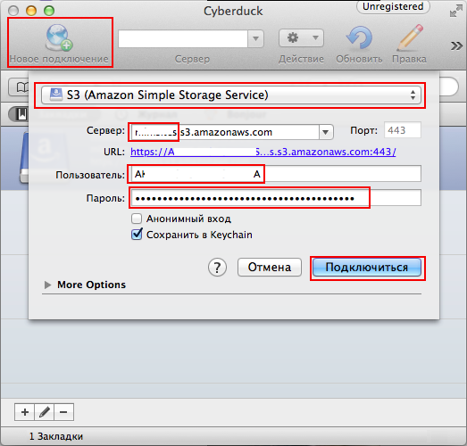

Оглавление | Назад | Далее
Инструменты и библиотеки для работы с S3
Графические утилиты
Cyberduck
Легкая бесплатная программа для Windows и Mac OS X.

Создаем Новое подключение, выбираем S3, вводим полный путь до бакета в формате bucket.s3.amazonaws.com, в качестве имени пользователя вводим Access Key ID, в качестве пароля Secret Access Key, полученные на этапе подготовки.
Библиотеки
Python
Boto
Boto - библиотека на Python предоставляющая интерфейс для Amazon Web Services.
Публичный репозиторий - https://github.com/boto/boto
Документация - http://docs.pythonboto.org/en/latest
Единственное требование - Python 2.6/2.7, частично поддерживвается Python 3.3/3.4.
Устанавливается Boto с помощью питоновского менеджера пакетов pip.
Установка pip
Aptitude (Debian and Ubuntu)
$ sudo apt-get install python-pip
Yum (CentOS, Fedora)
$ sudo yum install python-pip
FreeBSD
$ cd /usr/ports/devel/py-pip/ && make install clean
Устанавка boto
$ pip install boto
PHP
Amazon Web Services SDK
Консольные утилиты
s3put
Коносльная утилита для закачки файлов на S3 на Python; поставляется вместе с Boto.
Мы ее будем использовать для переноса файлов с сервера на S3.
Установка
Тулзу можно использовать сразу после установки boto.
Но нам необходимо не только копировать файлы на S3, но и удалять их. Текущая релизация этого не умеет, поэтому надо заменить ее моей версией.
Сначала убедимся, что исходный s3put лежит в /usr/local/bin. Если все окей, то заменяем его моим:
$ cd /usr/local/bin
$ sudo cp s3put s3put.backup
$ sudo wget https://raw.githubusercontent.com/meetmatt/s3put/master/s3put.py -O s3put
$ sudo chmod +x s3put
Проверяем:
$ s3put | grep delete
[--header] [--region <name>] [-x/--delete] [--host <s3_host>] path [path...]
delete - delete local file after successfull upload
Использование
Нас интересуют параметры:
- -a/--access_key - Access Key ID
- -s/--secret_key - Secret Access Key
- -b/--bucket - название бакета
- --region - сокращенное название региона (колонка Region в таблице)
- --delete - удалить файлы после загрузки
- --grant - изменить ACL файла
- --prefix - префикс, который будет удален из пути файла
Допустим мы хотим переместить фотографии юзеров из папки /var/www/site/public/uploads/images.
Ссылка на файл сейчас выглядит так: http://example.com/uploads/images/boobs.jpg.
Нам надо, чтобы файл был доступен по ссылке http://example.s3.amazonaws.com/uploads/images/boobs.jpg.
Тогда в качестве параметра prefix должно быть указано /var/www/site/public/.
Так выглядит вызов s3put в нашем случае:
$ s3put --access-key LUGMNMH7B372CDN1F654 \
--secret-key oUkLK/9SAsU9uYwQV4oO+9iLPO3bwyVbz6yBEaaY \
--bucket example \
--region='eu-west-1' \
--grant='public-read' \
--prefix='/var/www/site/public/' \
--delete \
/var/www/site/public/uploads/images/
В случае CloudFront файл будет доступен по ссылке http://xxxxxxx.cloudfront.com/uploads/images/boobs.jpg.
Если указать путь до файла, то скопируется только он, если до директории, то рекурсивно скопируются все файлы и поддиректории в ней.
Пример использования
Скачаем какой-нибудь файл во временную директорию (здесь и далее используется Linux):
$ mkdir -p /tmp/public/uploads/images
$ wget http://a0.awsstatic.com/main/images/logos/aws_logo.png -O /tmp/public/uploads/images/boobs.png
Узнаем размер файла, чтобы потом сравнить с тем, что попадет на S3:
$ ls -nl /tmp/public/uploads/images/aws_logo.png | awk '{print $5}'
6258
Переместим файл на S3:
$ s3put --a LUGMNMH7B372CDN1F654 -s oUkLK/9SAsU9uYwQV4oO+9iLPO3bwyVbz6yBEaaY -b example --region='eu-west-1' --grant='public-read' --prefix='/tmp/public/' --delete /tmp/public/uploads/images/
Copying /tmp/public/uploads/images/aws_logo.png to example/uploads/images/aws_logo.png
Upload complete
Removing /tmp/public/uploads/images/aws_logo.png
Если s3put выдает ошибку RequestTimeTooSkewed, значит серверное время слишком расходится с временем Амазона. Синхронизируем часы по NTP:
$ sudo ntpdate 0.pool.ntp.org
Проверим, что файл был удален:
$ ls -l /tmp/public/uploads/images/
total 0
Проверим размер файла на S3:
$ curl -I http://example.s3.amazonaws.com/uploads/images/aws_logo.png 2>&1 | grep Content-Length | awk '{print $2}'
6258
Вместо последнего шага можно просто открыть картинку в браузере http://example.s3.amazonaws.com/uploads/images/aws_logo.png или в Cyberduck.
Оглавление | Назад | Далее